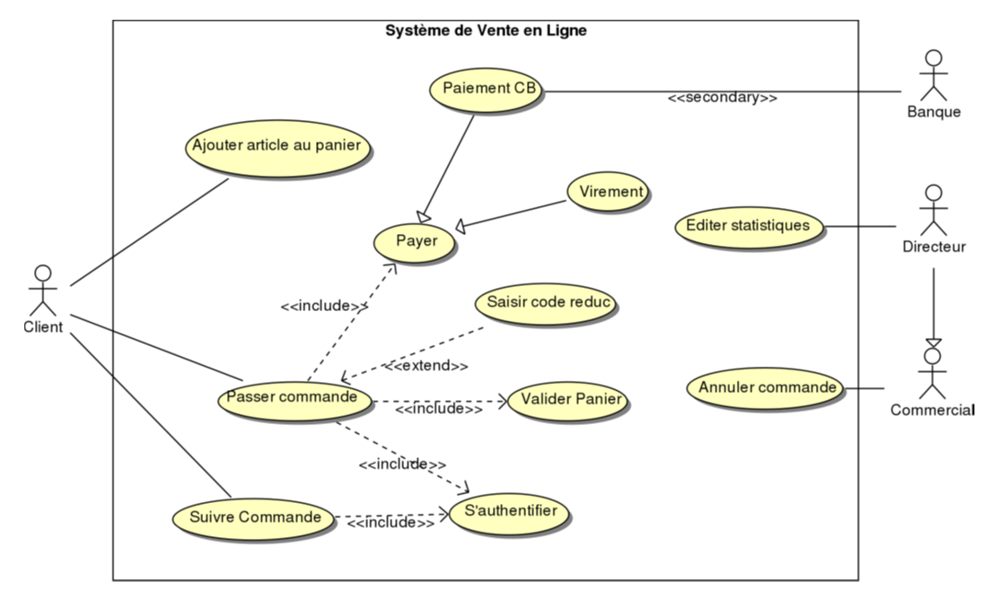

Introduction
L'UML (unified modeling language) ou langage de modélisation unifiée est un langage graphique de modélisation informatique. Ce langage est désormais la référence en modélisation objet. Cette dernière consiste à modéliser des éléments du monde réel (immeuble, personne, voiture, ...) ou virtuel (temps, compétences, qualités) en un ensemble d'entités informatiques appelées Objet.
L'UML est constitué de diagrammes qui servent à visualiser et décrire la structure et le comportement des objets dans un système.

Modélisation orientée objet (MOO)
La modélisation ou conception orientée objet (COO) est une méthode qui conduit à des architectures logicielles fondées sur les objets du système, plutôt que sur une décomposition fonctionnelle. On peut partir des objets du domaine (approche ascendante) ou procéder autrement.
Les différents types de diagrammes UML sont répartis en deux grandes catégories : diagrammes de structures et diagrammes de comportements.
Les différents types de diagrammes UML
Les diagrammes de structures représentent les éléments du système, leurs propriétés et les relations entre eux, tels que le diagramme de classes et le diagramme d'objet.
Les diagrammes de comportements, comme le diagramme de cas d'utilisation, montrent les processus et interactions entre les objets.
Diagramme de cas d'utilisation
Le diagramme de cas d'utilisation décrit les grandes fonctions d'un système du point de vue de ses acteurs. Chaque cas d'utilisation est un service rendu à l'utilisateur, comprenant un déclenchement, un déroulement et une fin.
Les relations entre cas d'utilisation incluent l'inclusion, l'extension et la généralisation.
Les acteurs principaux initient les échanges pour réaliser un cas d'utilisation, tandis que les acteurs secondaires sont sollicités par le système.
Diagramme de classes
Le diagramme de classes représente les relations entre les différentes classes dans un système. Chaque classe inclut des attributs et des méthodes. Les relations définissent les dépendances entre elles, comme l'héritage, la composition ou l'association.
Ces relations permettent de visualiser les structures statiques du système. L'héritage est représenté par une flèche pointant vers l'élément parent.

Images supplémentaires
Les images suivantes complètent les exemples présentés :